Tech art · R&D internship · OLM Digital · 2026Tech art · Stage R&D · OLM Digital · 2026
A procedural toon shader for Maya and Arnold. Three wave fronts break on a beach, built to match hand-drawn anime water.Un shader toon procédural pour Maya et Arnold. Trois fronts de vague déferlent sur une plage, dans le style de l'eau dessinée à la main en animation japonaise.
Clémentine GarocheR&D team, OLM Digital · supervised by Marc SalvatiÉquipe R&D, OLM Digital · encadrée par Marc Salvati
Same network, only the parameters changeMême réseau, seuls les paramètres changent
Pokémon: The Movie (Lugia, 1999). Main reference: dashed foam birth, cell veins, flickering splashes, wet sand.Pokémon 2 (Lugia, 1999). Référence principale : écume qui naît en pointillés, veines cellulaires, éclaboussures qui scintillent, sable mouillé.
The End of Evangelion (1997). A second look, reached by changing water color, cell pattern and band width.The End of Evangelion (1997). Un second rendu, obtenu en changeant la couleur de l'eau, le motif des cellules et la largeur de bande.
Shading network organizationOrganisation du réseau de shading
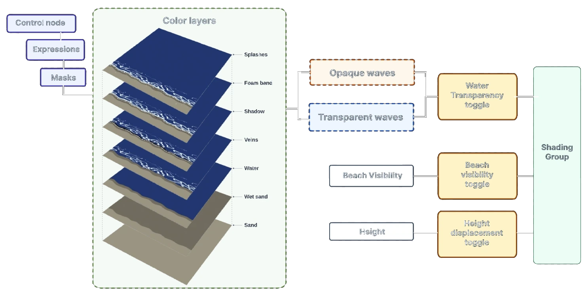
Every setting in a custom Attribute Editor template, no Hypershade neededTous les réglages dans un template d'Attribute Editor, sans ouvrir l'Hypershade
A, B and C are phase-offset copies of the same MEL logicA, B et C sont des copies décalées dans le temps de la même logique MEL
Each front loops through the same life cycle. Offsetting them in time makes them overlap and stagger, so the sea never reads as one repeating wave.Chaque front parcourt le même cycle de vie. En les décalant dans le temps, ils se chevauchent et s'échelonnent : la mer ne ressemble jamais à une seule vague qui se répète.
Life cycle of each frontCycle de vie de chaque front
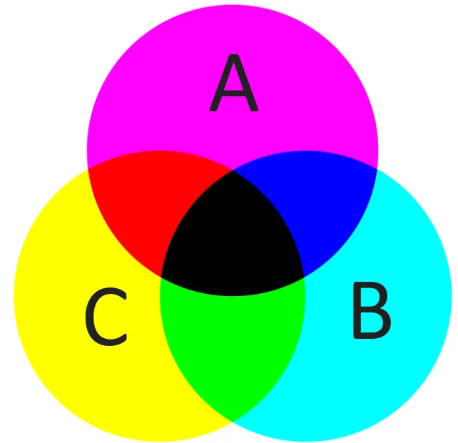
Position of a front along the beach, as a function of the cycle fraction tPosition d'un front sur la plage, en fonction de la fraction du cycle t
t = fraction of the cycle = frac(time / Wave Cycle Duration + Phase Offset)t = fraction du cycle = partie décimale de (temps / durée du cycle + décalage de phase)
float $t = $rawCycleA - floor($rawCycleA);
float $pos = 1 - pow(1 - $moveT, 2);
float $posMapped = 1.5 - $pos * 1.4;
if ($t > $recedeStart) {
$recede = $recede*$recede*(3.0 - 2.0*$recede);
$posMapped += $recede * $recedeMag;
}
Surf_line_mask_A.ramp[1].ramp_Position = $posMapped;Looks reached through the control node onlyRendus obtenus uniquement depuis le nœud de contrôle
OLM cellular and Voronoi noises, dense near the foam, sparse behindBruits cellulaires et Voronoi d'OLM, denses près de l'écume, plus clairsemés derrière
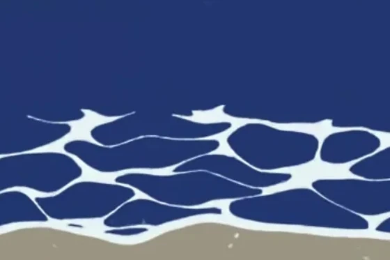
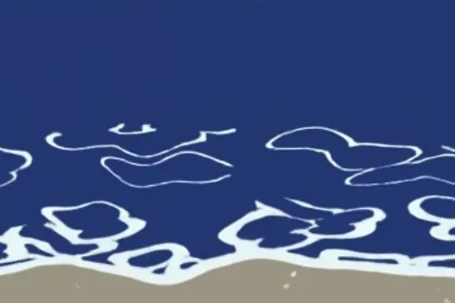
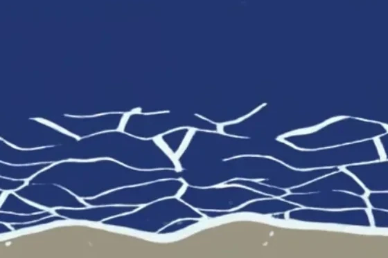
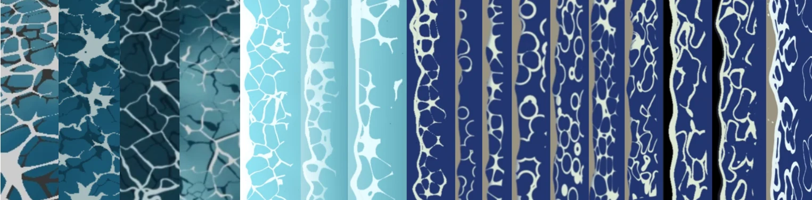
Every subsystem has its own per-front maskChaque sous-système a son propre masque par front
On top of the three fronts: dashed foam birth, foam band, cast shadow, wet sand and splashes, plus water color, beach visibility, transparency and height, all set from the control node.En plus des trois fronts : naissance de l'écume en pointillés, bande d'écume, ombre portée, sable mouillé et éclaboussures, ainsi que couleur de l'eau, visibilité de la plage, transparence et relief, tout réglable depuis le nœud de contrôle.
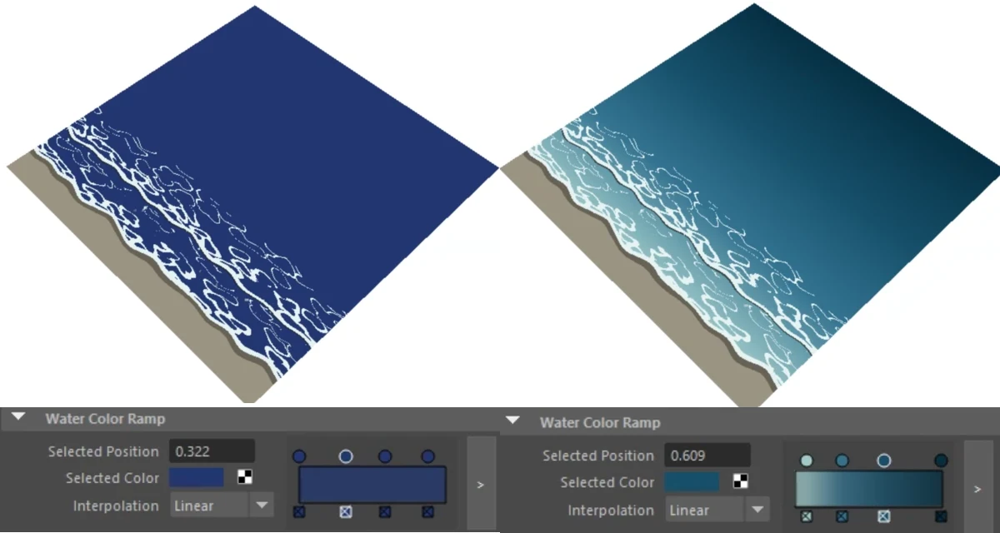
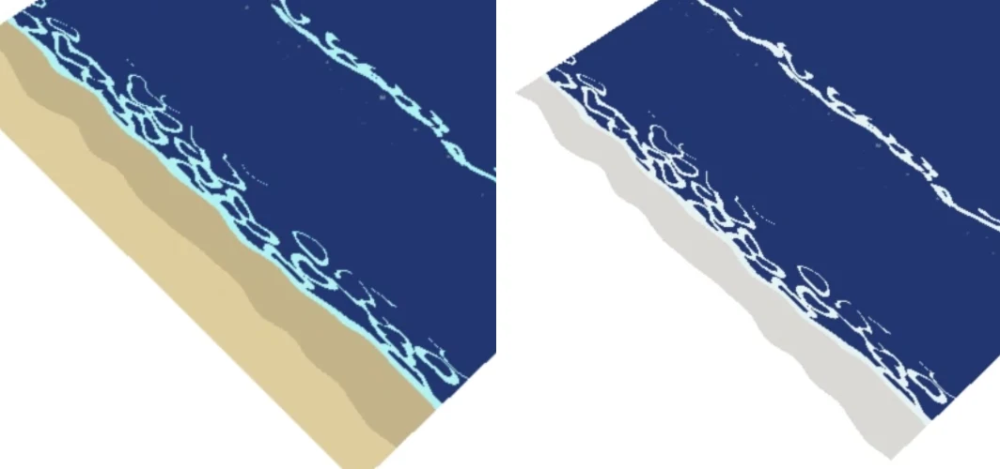
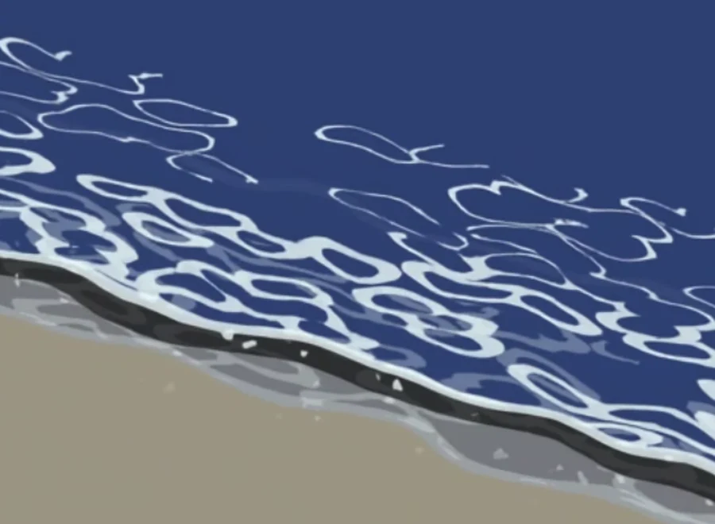
April to May · exploring before choosing an approachAvril à mai · explorer avant de choisir une approche
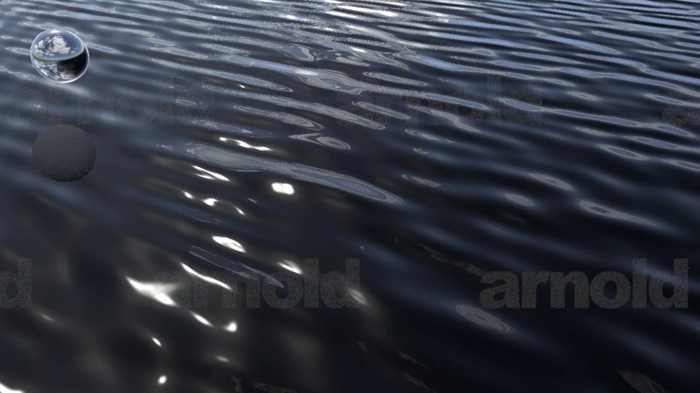
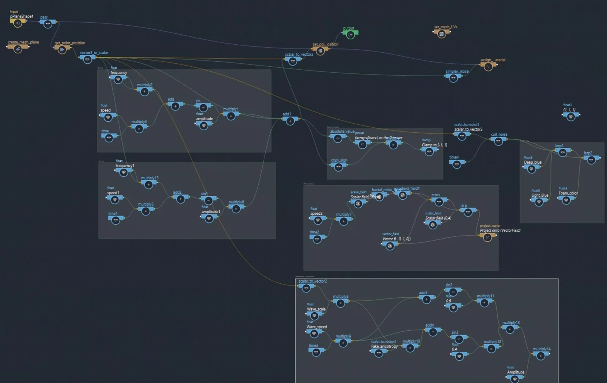
May to June · from simulated swell to a procedural surf lineMai à juin · de la houle simulée à une ligne d'écume procédurale
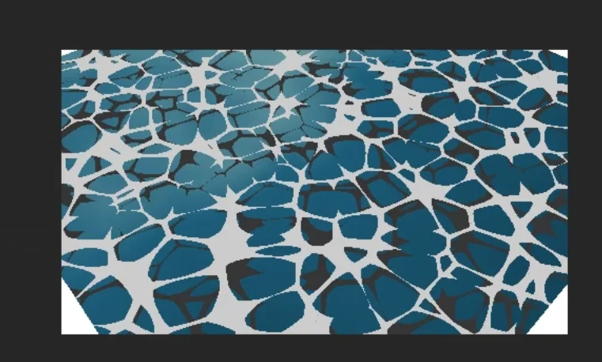
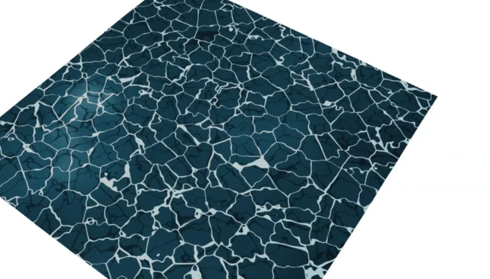
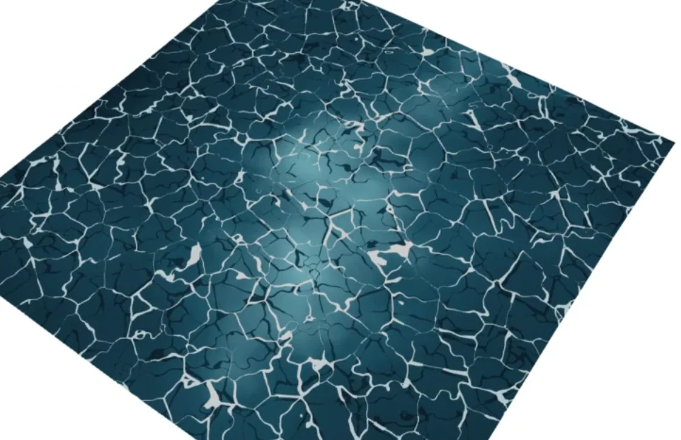